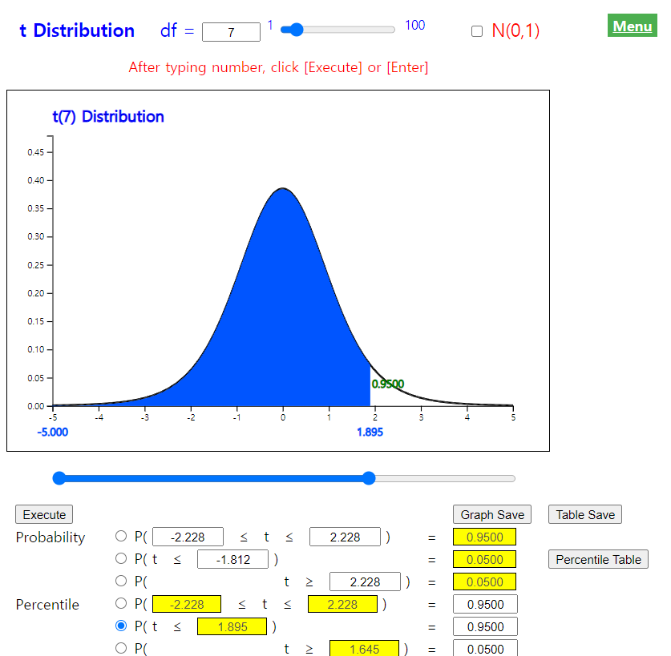

This is a basic question on the estimation that everyone can think about at least once. The sampling distribution of all possible sample means which we studied in the previous section is the answer to this question. That is, whatever a population distribution is, if the sample size is large enough, all possible sample means are clustered around the population mean in the form of a normal distribution. Therefore, the sample mean obtained from one set of samples is usually close to the population mean. Even in the worst case, the difference between the population mean and sample mean, known as an error, is not so significant, and it is possible to estimate the population mean by using the sample mean. The larger the sample size, the more sample means are concentrated around the population mean based on the central limit theorem and hence we can reduce the error of the estimation.
Chapter 6. Sampling Distribution and Estimation
6.2.2 Estimation of the Population Mean
[presentation] [video]
Point Estimation of the Population Mean
In general, the sample statistic used to estimate a population parameter must have good characteristics, so that the estimate can be accurate. If the average of all possible sample statistics is equal to the population parameter, then the sample statistic has a good chance to estimate the population parameter and it is called an unbiased estimator. In the previous section we found that a sample mean is an unbiased estimator of the population mean.
If the value of a sample statistic becomes closer and closer to the population parameter when the sample size grows, the sample statistic is called a consistent estimator. The variance of all possible sample means is closer to zero as the sample size increases by the central limit theorem studied in the previous section, so the sample mean is closer to the population mean. Therefore, the sample mean is a consistent estimator of the population mean.
If a sample statistic has the least variance when there are several unbiased estimators for the population parameter, it is called an efficient estimator. The sample mean is also an efficient estimator. Consequently, a sample mean has all good characteristics necessary to estimate the population mean.
A value of one observed sample mean is called a point estimate of the population mean.
If the average value of all possible sample statistics is equal to the population parameter, then the sample statistic is called an unbiased estimator of the population parameter. The sample mean is an unbiased estimator of the population mean.
When a sample size grows, if the value of the sample statistic becomes closer and closer to the population parameter, the sample statistic is called a consistent estimator. The sample mean is a consistent estimator of the population mean.
If a sample statistic has the least variance when there are several unbiased estimators for the population parameter, it is called an efficient estimator. The sample mean is an efficient estimator.
(Note that \(\small \overline X \) is an unbiased, consistent, efficient estimator of μ).
Interval Estimation of the Population Mean – Known Population Variance
In contrast to the point estimate for the population mean, estimating population mean by using an interval is called an interval estimation. If the population is a normal distribution with the mean μ and variance \(σ^2 \), the distribution of all possible sample means is a normal distribution with the mean μ and variance \(\frac {σ^2}{n} \), so the probability that one sample mean will be included in the interval \( μ ± 1.96 \times \frac {σ}{\sqrt{n}} \) is 95% as follows. $$\small P(\mu - 1.96 \times \frac {σ}{\sqrt{n}} < \overline X < \mu + 1.96 \times \frac {σ}{\sqrt{n}} ) = 0.95 $$ We can rewrite this formula as follows. $$\small P(\overline X - 1.96 \times \frac {σ}{\sqrt{n}} < \mu < \overline X + 1.96 \times \frac {σ}{\sqrt{n}} ) = 0.95 $$ Assuming σ is known, the meaning of the above formula is that 95% of intervals obtained by applying the formula \(\small [ \overline {X} - 1.96 \times \frac {σ}{\sqrt{n}}, \overline {X} + 1.96 \times \frac {σ}{\sqrt{n}} ] \) for all possible sample means include the population mean. The formula of this interval is referred to as the 95% confidence interval of the population mean. $$\small \left[ \overline {X} - 1.96 \times \frac {σ}{\sqrt{n}}, \overline {X} + 1.96 \times \frac {σ}{\sqrt{n}} \right] $$
Generally, since \(\small \overline {X} \sim N(μ, \frac {σ^2}{n} ) \), the standardized random variable of \(\small \overline X \), \(\small Z = \frac {\overline X - \mu}{\frac {\sigma}{\sqrt n}} \), follows the standard normal distribution \(N(0,1)\). Therefore, the following probability of the standard normal random variable \(Z\) is \(1-α\) . $$\small P \left( -z_{\alpha/2} < \frac {\overline{X} - \mu } {\sigma/\sqrt{n}} < z_{\alpha/2} \right) = P ( -z_{\alpha/2} < Z < z_{\alpha/2} ) = 1 - \alpha $$ This formula can be written as follows: $$\small P \left( \mu - z_{\alpha/2} \frac {\sigma} {\sqrt{n}} < \overline X < \mu + z_{\alpha/2} \frac {\sigma} {\sqrt{n}} \right) = 1 - \alpha $$ This formula can also be written as follows: $$\small P \left( \overline X - z_{\alpha/2} \frac {\sigma} {\sqrt{n}} < \mu < \overline X + z_{\alpha/2} \frac {\sigma} {\sqrt{n}} \right) = 1 - \alpha $$ The confidence interval for the population mean μ is as follows if the population is normally distributed and the population variance \( \sigma^2 \) is known.
Assume a population is a normal distribution and the population variance is known. $$\small \left[ \overline X - z_{\alpha/2} \frac {\sigma} {\sqrt{n}} , \overline X + z_{\alpha/2} \frac {\sigma} {\sqrt{n}} \right] $$
100(1-α)% here is called a confidence level, which refers to the probability of intervals that will include the population mean among all possible intervals calculated by the confidence interval formula. Usually, we use 0.01 or 0.05 for α. \( z_{α} \) is the upper α percentile of the standard normal distribution. In other words, if \(Z\) is the random variable which follows the standard normal distribution, the probability that \(Z\) is greater than \( z_{α} \) is α, i.e., $$ P(Z > z_{α} ) = α $$ For example, \( z_{0.025;} \) = 1.96, \( z_{0.95} \) = -1.645, \( z_{0.005} \) = 2.575.
<Figure 6.2.6> shows a simulation of the 95% confidence interval for the population mean by extracting 100 sets of samples with the sample size \(n\) = 20 from a population of 10,000 numbers which follow the standard normal distribution N(0,1). In this case, 96 of the 100 confidence intervals contain the population mean 0. This result might be different on your computer, because the program use a random number generator which depends on computer. Whenever we repeat these experiments, the result may also vary slightly.
[Confidence Interval Experiment]
Sample Size n = Repetition r =
Answer
\( \qquad \small z_{α/2} = z_{0.05/2} = 1.96 \)
\( \qquad \small \left[ \overline X - z_{\alpha/2} \frac {\sigma} {\sqrt{n}} , \overline X + z_{\alpha/2} \frac {\sigma} {\sqrt{n}} \right] \)
\( \qquad \small ⇔ [ 275 － 1.96 \frac{5}{10}, 275 ＋ 1.96 \frac{5}{10} ] \)
\( \qquad \small ⇔ [274.02, 275.98] \)
\( \qquad \small z_{α/2} = z_{0.01/2} = 2.575 \)
\( \qquad \small ⇔ [ 275 － 2.575 \frac{5}{10}, 275 ＋ 2.575 \frac{5}{10} ] \)
\( \qquad \small ⇔ [273.71, 276.29] \)
\( \qquad \small ⇔ [ 275 － 1.96 \frac{5}{20}, 275 ＋ 1.96 \frac{5}{20} ] \)
\( \qquad \small ⇔ [274.51, 275.49] \)
Interval Estimation of the Population Mean – Unknown Population Variance
One problem in estimating the unknown population mean by using the formula of the confidence interval in the previous section is that either the population variance may not be known or the population is not normally distributed. If the sample size is large enough, a confidence interval of the population mean can be obtained approximately using the sample variance instead of the population variance on the previous formula. However, if the sample size is small and the sample variance is used, a confidence interval based on the t distribution should be used.
The \(t\) distribution was studied by a statistician W. S. Gosset, who worked for a brewer in Ireland, and published his study result in 1907 under the alias Student. So \(t\) distribution is often referred to as Student's \(t\) distribution. The \(t\) distribution is not just a single distribution, but it is a family of distributions under a parameter called a degree of freedom, 1,2, ... , 30, ... and denoted as \(t_1 ,t_2 , ... , t_{30} , ... \)
The shape of the \(t\) distribution is symmetrical about zero (y axis), similar to the standard normal distribution, but it has a tail that is flat and longer than the standard normal distribution. <Figure 6.2.7> shows the standard normal distribution N(0,1) and \(t\) distribution with 3 degrees of freedom at the same time by using the \(t\) distribution module of 『eStatU』.

<Figure 6.2.7> Comparison of \(t_3\) and N(0,1)
|
The \(t\) distribution is closer to the standard normal distribution as degrees of freedom increase above 30. This is why a confidence interval can be obtained approximately by using the standard normal distribution if the sample size is greater than 30. Denote \(t_{n:α}\) as the 100(1-α)% percentile of the \(t\) distribution with \(n\) degrees of freedom. For example, \(t_{7:0.05}\) is the 100(1-0.05)=95% percentile of the \(t\) distribution and its value is 1.895 as <Figure 6.2.8>. In the standard normal distribution, this value was 1.645. Since the \(t\) distribution is symmetrical, \(t_{n:α} = -t_{n:1-α}\).
In order to find a percentile value of the \(t_{7}\) distribution using 『eStatU』, click on '\(t\) distribution' in the main menu of 『eStatU』 and then set the degree of freedom (df) to 7, and set the probability value in the fifth option below the \(t\) distribution graph to 0.95, then \(t_{7:0.05}\) = 1.895 will appear as <Figure 6.2.8>.
|

<Figure 6.2.8> Upper 5 percentile of \(t_7\) distribution = 1.8946
|
Consider the interval estimation of the population mean when you do not know the population variance, but assume that the population is a normal distribution. If \( X_1 , X_2 , ... , X_n \) is the random sample of size \(n\) from the normal population, then it can be shown that the distribution of \( \frac {\overline X -\mu}{S/\sqrt{n}} \), where σ is replaced with S, is the \(t\) distribution with \( n-1 \) degrees of freedom. $$\small \frac {\overline X -\mu}{\frac{S}{\sqrt{n}}} \sim t_{n-1} $$ Hence the probability of the (1 - α)% interval is as follows. $$\small P \left( -t_{n-1;\alpha/2} < \frac {\overline{X} - \mu } {S\sqrt{n}} < t_{n-1:\alpha/2} \right) = 1 - \alpha $$ The left hand side of the above formula can be summarized as the confidence interval for the population mean when the population variance is unknown as follows:
Assume a population is a normal distribution and the population variance \(σ^2\) is unknown. $$\small \left[ \overline X - t_{n-1:\alpha/2} \frac {S} {\sqrt{n}} , \overline X + t_{n-1:\alpha/2} \frac {S} {\sqrt{n}} \right] $$
where \(n\) is the sample size and \(S\) is the sample standard deviation.
Answer
Since we do not know the population variance, \(t\) distribution should be used for interval estimation of the population mean.
Since \( t_{n-1:\alpha/2} = t_{25-1:0.05/2} = t_{25-1:0.025} = 2.0639 \), the 95% confidence interval of the population mean is as follows. $$ \small \begin{multline} \shoveleft \left[ \overline X - t_{n-1:\alpha/2} \frac {S} {\sqrt{n}} , \overline X + t_{n-1:\alpha/2} \frac {S} {\sqrt{n}} \right] \\ \shoveleft ⇔ [ 275 － 2.0639(5/5) , 275 ＋ 2.0639(5/5) ] \\ \shoveleft ⇔ [ 272.9361, 277.0639 ] \end{multline} $$ Note that the smaller the sample size, the wider the interval width.
171 172 185 169 175 177 174 179 168 173
Answer
Click [Estimation : μ Confidence Interval] on the menu of 『eStatU』 and enter data at the [Sample Data] box as <Figure 6.2.9>. Then the confidence intervals [170.68, 177.92] are calculated using the \(t_9\) distribution.
In this 『eStatU』 module, confidence intervals can be obtained by entering the sample sizes, sample mean, and sample variance without entering data.
[ ]
(input either sample data or sample statistics using csv / bsv)
| Sample Data |
| Sample Statistics | Sample Size | n = | (>1) | |
| Sample Mean | x̄ = | |||
| Sample Variance | s2 = | |||
| Confidence Level | 1 - α | |||
| Sampling Distribution | σ2 = | |||
| Confidence Interval | = | = | |
| x̄ ± | ⇔ | [ , ] |
| n = | 1 | 200 | 1-α = | 0.60 | 0.99 |
In this module of 『eStatU』, a simulation experiment to investigate the size of the confidence interval can be done by changing the sample size \(n\) and the confidence level 1 - α as in <Figure 6.2.10>. If you increase \(n\), the interval size becomes narrower. If you increase 1 - α, the interval size becomes wider.
| In [Practice 6.2.1], suppose you do not know the population standard deviation and the sample standard deviation is 5 kg. Answer the same questions in [Practice 6.2.1] using 『eStatU』. |
Multiple Choice Exercise
*** Choose one answer and click [Submit] button
6.4 Which distribution is used to estimate the population mean in a small sample with a small number of samples?
6.5 The following is a description about estimation. Which explanation is wrong?
6.6 The weight of products produced by a company follows a normal distribution. In order to estimate the average weight, 49 products collected by simple random sampling and examined for their weights, resulting in an average of 6200 grams and a standard deviation of 140 grams. What is the 95% confidence interval for the average weight of this product?
6.7 Population variance of a normal population was \(\sigma^2\). A sample of size n was taken from this population to obtain a sample mean \(\small \overline x\). What is the 99% confidence interval for the population mean \(\mu\)?
6.8 Out of 2,000 products made by a company, 400 were randomly extracted to measure the weight and the sample mean was \(\small \overline x = 25.0\) and sample standard deviation was \(s = 4.99\). Obtain a 95% confidence interval of the population mean?
6.9 The average monthly income of 5,000 households which were randomly selected in a city was 3600 US$ and the standard deviation was 500 US$. Obtain a 95% confidence interval of the city’s monthly income.
6.10 A sample of size 49 was taken from a population with a population standard deviation \(\sigma \) = 5. If the sample mean is \(\small \overline x\) = 16.2, what is a 95% confidence interval for the population mean ?
6.11 When a population follows a normal distribution and a random sample of size 25 was selected, the sample mean was 14.6 and sample standard deviation was 5. What if we get a 95% confidence interval for the population mean? \(t_{24: 0.05} = 2.064, t_{24: 0.01} = 2.797, t_{25: 0.05} = 2.060, t_{25: 0.01} = 2.787, t_{26: 0.05} = 2.056, t_{26: 0.01} = 2.779 \)